Artwork installations for the legendary Chinese restaurant at Taj Mansingh, New Delhi — pieces that need not be functional, but must carry a story and an artistic justification.
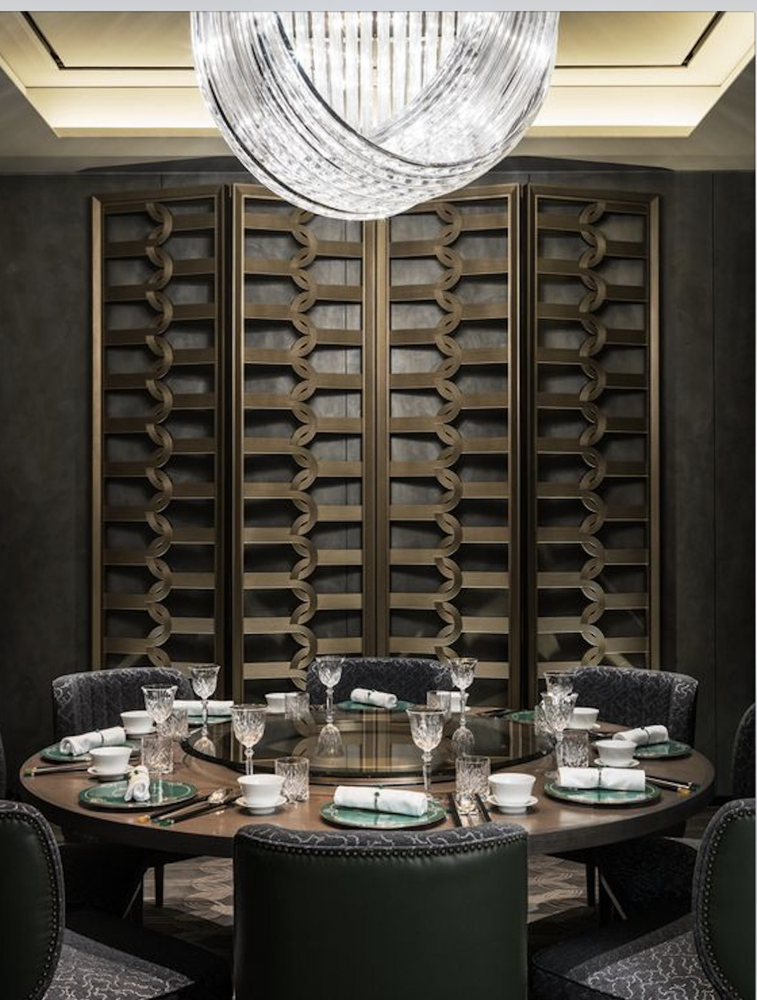
House of Ming is the storied Chinese restaurant at The Taj Mahal Hotel, New Delhi. The brief was unusually open: design artwork installations for the restaurant's entrance and side wall, relevant to the architecture and identity of the hotel. They did not need to be functional — but each had to carry a story and an artistic justification.
The work proceeded as a set of concept proposals across two zones — the entrance front and the side wall — each rendered with the narrative that earned its place.
When a piece doesn't have to do anything, it has to mean everything.
“It does not need to be functional” is a harder brief than it sounds. With no utility to justify it, each installation had to earn its place through narrative alone — rooted in House of Ming's own visual identity and the architectural language of the Taj Mansingh lobby, so that nothing read as decoration applied from outside.
The vocabulary was set before a single concept was drawn. An inspiration board gathered celadon ware, laser-cut Chinese jali, oil-paper umbrellas, blue-and-white Ming porcelain, classical landscape painting, and the moon gate; a material board narrowed it to lacquered glass, polished wood, brass, and silver-finish frames.
From that base, the entrance produced three concepts and the side wall six — each a complete proposal with its symbolic reading, not a sketch awaiting justification.
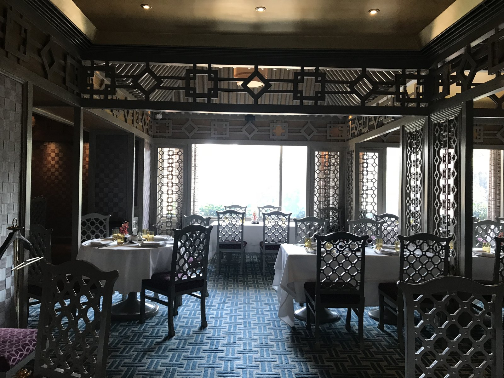
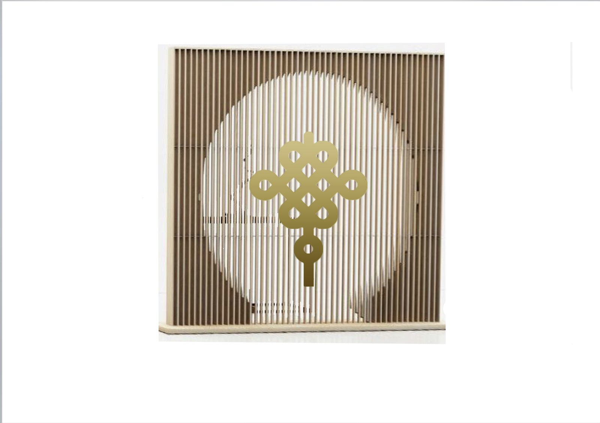
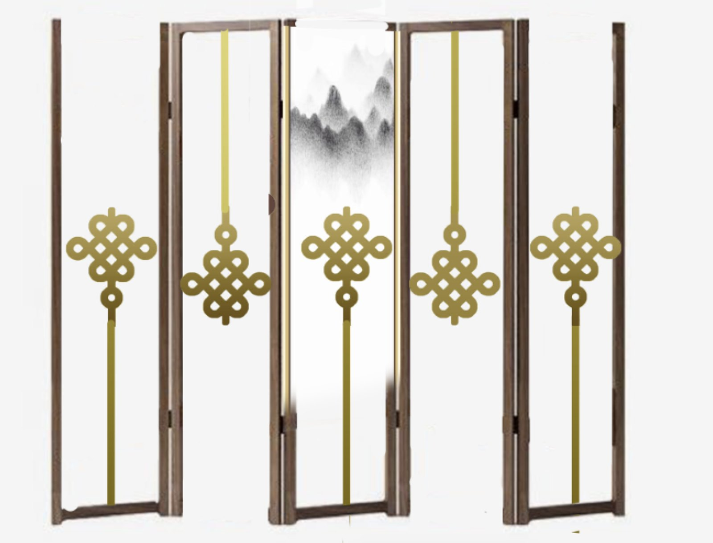
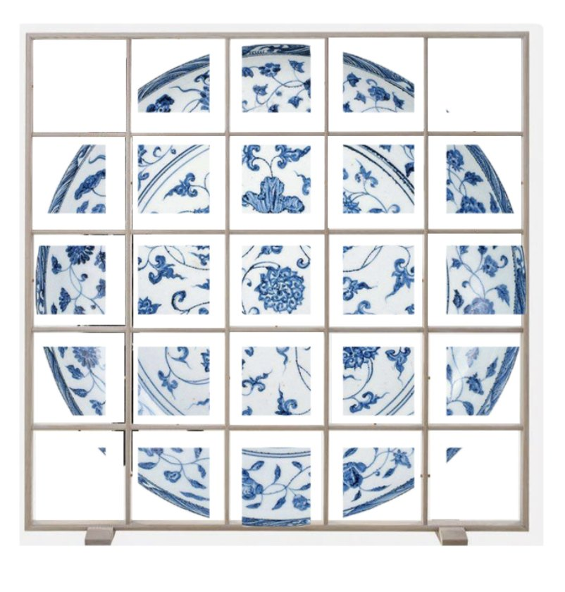
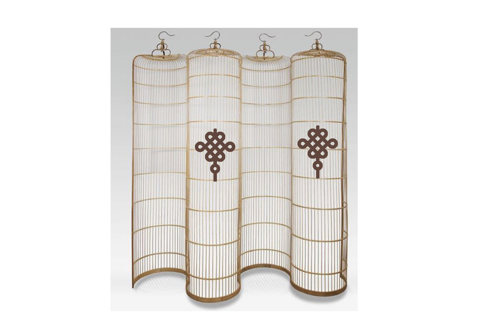
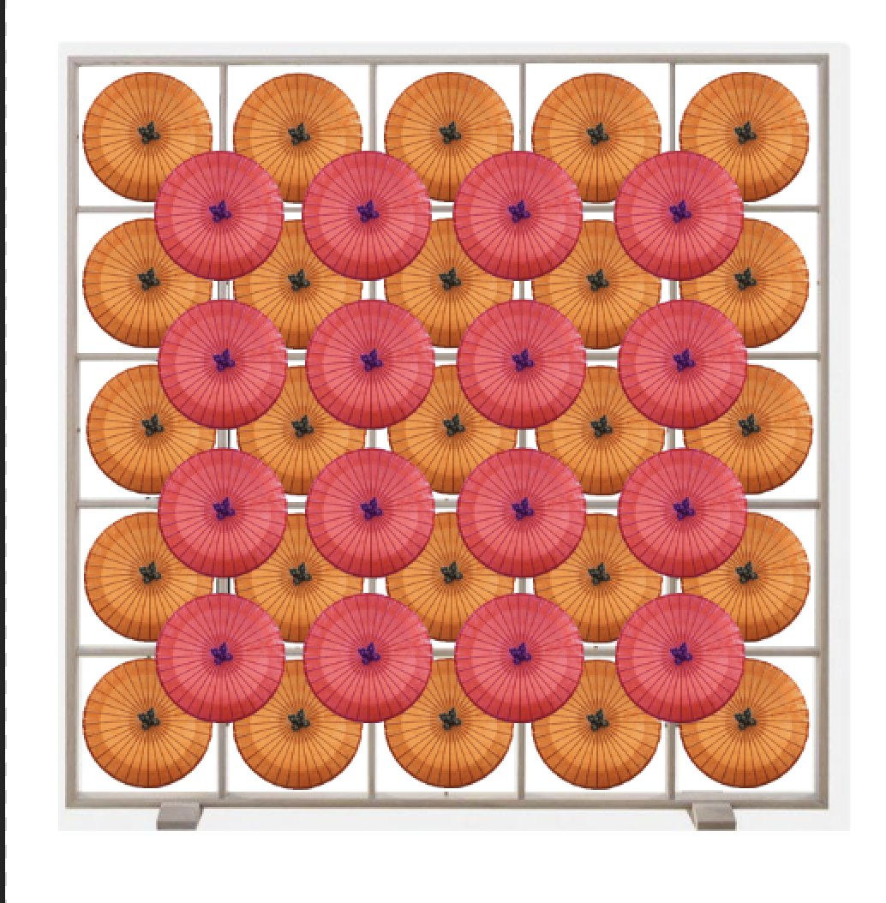
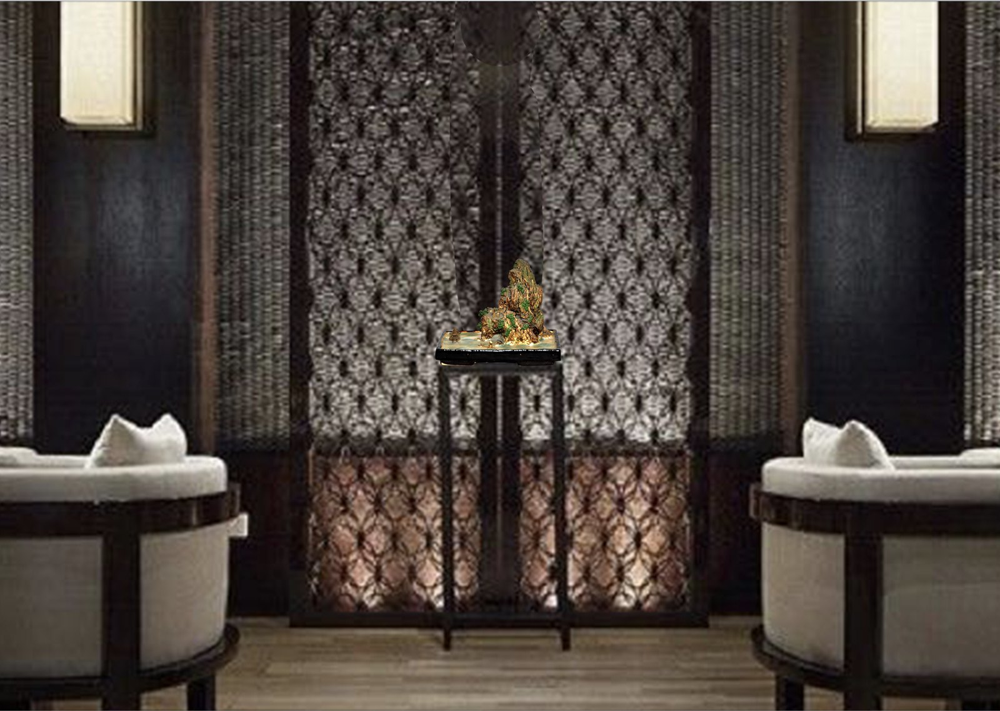
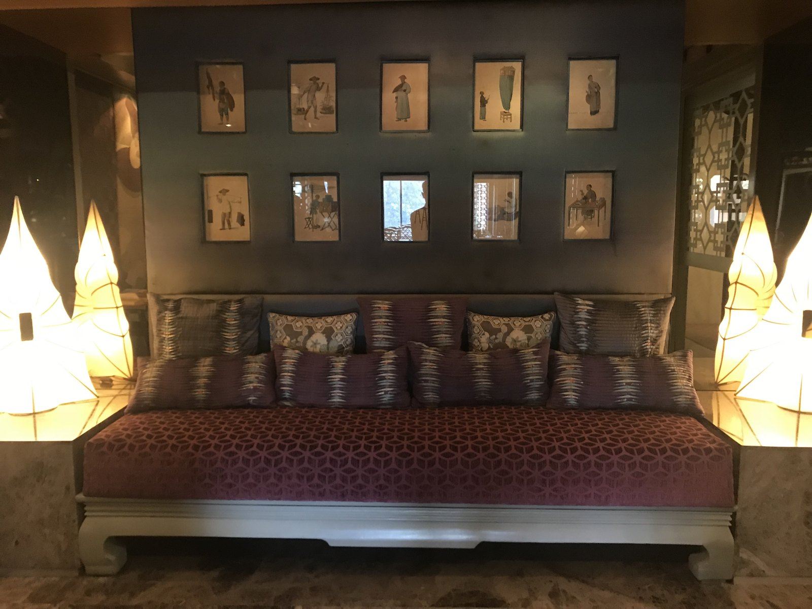
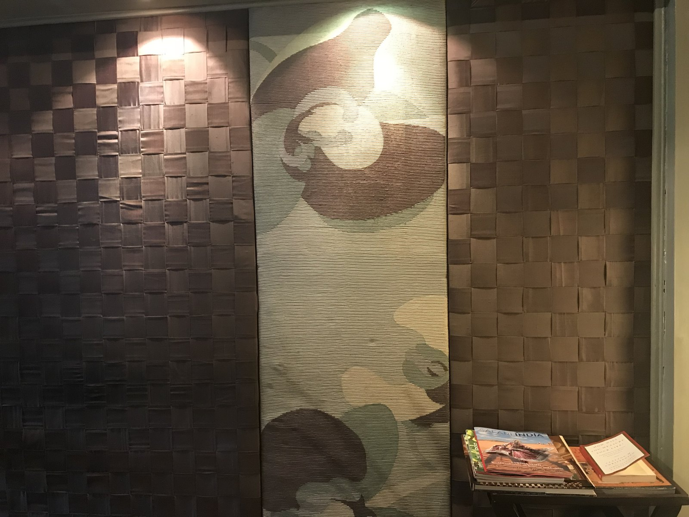
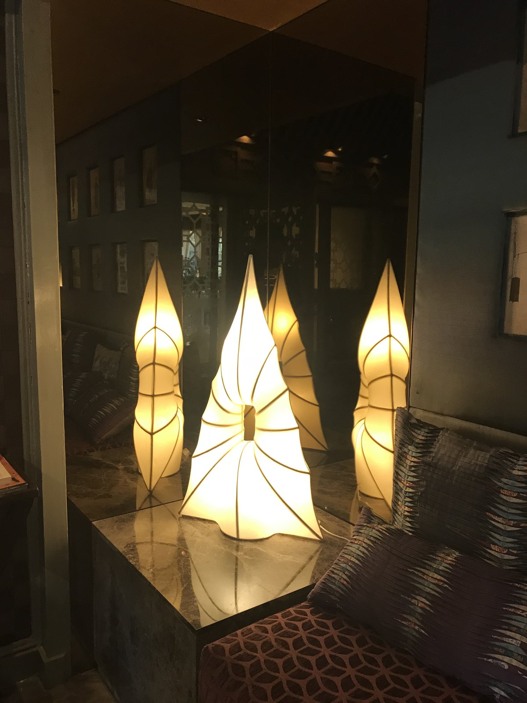
A traditional Chinese window, a single bonsai — and a quiet paradox.
The selected concept frames a penjing (bonsai) behind a traditional Chinese window-style wooden screen. It blends directly into the Taj Mansingh lobby's existing architectural elements, and turns on a deliberate ambiguity: are you indoors looking out at the world, or outdoors looking in at a bonsai? Restraint, with a story folded inside it.
A complete suite of entrance and side-wall installation concepts was delivered — each with its own symbolic justification, from the feng-shui moon gate to the festive-umbrella bouquet. The window-and-penjing proposal was selected for the side-wall installation.
The case study lives here as a page; the PDF is a convenience, not the primary record.